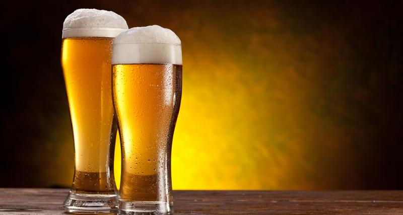
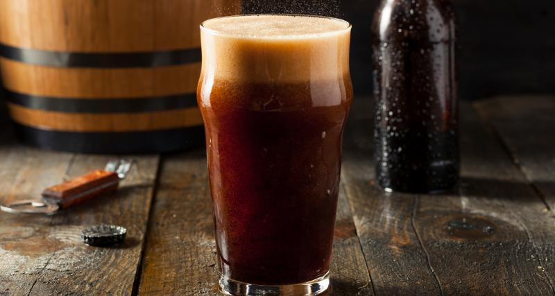

Les différentes bières
La bière est une boisson alcoolisée et rafraîchissante que l’on obtient par fermentation à partir d’un mélange d’eau, de malt (torréfaction d’une céréale germée, en général de l’orge) et de houblon.
Les blanches, les blondes, les ambrées et les brunes
C’est le malt utilisé dans la fabrication de la bière qui lui donne sa couleur.
La bière blanche
La bière « blanche » est une bière au froment et non l’orge comme les autres. Elle peut être aromatisée aux épices (coriandre, écorce d’orange, etc…). Elle est d’une couleur très claire et un peu trouble. C’est une bière rafraîchissante et désaltérante qui a un petit goût acidulé.
La bière blonde
Les bières blondes ont une couleur dorée et limpide lié à la légère torréfaction de l’orge. Généralement elles ont une forte teneur en alcool et sont assez mousseuses avec une mousse compacte et crémeuse.
La bière ambrée
La bière ambrée est fabriquée à partir malt brun. On l’obtient grâce à une torréfaction plus forte de l’orge. Cela donne à la bière une couleur rousse. Au goût, la bière ambrée peut être fruitée, avec des subtilités d’épice ou de caramel.
La bière brune
Pour cette bière, l’orge est torréfié au maximum, ce qui donne un malt très brun.
Les meilleures bières françaises
Chaque année, le France Bière Challenge récompense les meilleures bières de France parmi plus de 400 bières. Voici une petite sélection des bières récompensées en 2019.
- Bière du 75eme - Brasserie de Sainte Mère Eglise
- IPA - Brasserie L'Instant
- La Française - Brasserie L'instant
- PVL Triple - Brasserie du pavé
- La quinarelle - Brasserie Stéphanoise
- PVL ambrée - Brasserie du Pavé
- Corde sensible - Brasserie Gallia
- Crécele brune - Brasserie Bos
- Session IPA - Brasserie Gallia
- Diamond Lily - Bresserie de Sainte Mère Eglise